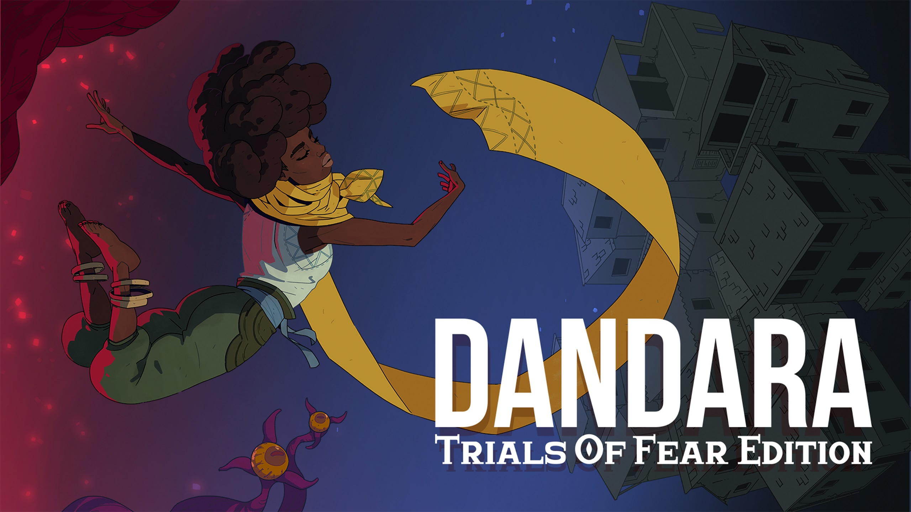

99 Vidas - O Jogo

Gênero: Beat 'em up, Ação
Lançamento: 22 de dezembro de 2016
Desenvolvedor: QUByte Interactive
Baseado no podcast brasileiro "99 Vidas", o jogo é um beat 'em up que homenageia os clássicos dos anos 80 e 90. Os jogadores podem escolher entre diversos personagens, cada um com habilidades únicas, e enfrentar hordas de inimigos em cenários variados que remetem à cultura pop e aos videogames retro.
A Lenda do Herói

Gênero: Plataforma, Aventura
Lançamento: 24 de março de 2016
Desenvolvedor: Druida Studio, Castro Brotherse
Baseado em uma série musical criada pelos Castro Brothers, A Lenda do Herói mistura humor, gameplay de plataforma e uma trilha sonora dinâmica que se adapta às ações do jogador. O jogo satiriza clichês dos games clássicos enquanto proporciona uma jogabilidade envolvente e desafiadora.
Dandara
Gênero: Plataforma 2D, Metroidvania
Lançamento: 6 de fevereiro de 2018
Desenvolvedor: Long Hat House
Inspirado na guerreira histórica Dandara dos Palmares, este metroidvania traz uma mecânica inovadora de movimentação sem gravidade, permitindo que a protagonista se desloque livremente pelas paredes, tetos e pisos. O jogo apresenta desafios estratégicos, exploração intensa e um estilo visual único, além de uma narrativa simbólica e uma trilha sonora imersiva.
Enigma do Medo

Gênero: Terror Interativo, FMV (Full Motion Video), Puzzle
Lançamento: 28 de novembro de 2024
Desenvolvedor: Kaisar Studios
Enigma do Medo é um jogo de terror interativo que utiliza vídeos com atores reais (FMV) para contar sua história. O jogador assume o papel de um investigador explorando uma casa assombrada, enfrentando eventos paranormais e resolvendo enigmas para desvendar os mistérios do local. A experiência imersiva lembra um filme de terror interativo, onde cada escolha pode mudar o rumo da história.
Fobia - St. Dinfna Hotel

Gênero: Survival Horror
Lançamento: 28 de junho de 2022
Desenvolvedor: Pulsatrix Studios
Neste survival horror brasileiro, o jogador assume o papel de Roberto Leite Lopes, um jornalista que investiga eventos paranormais no Hotel Santa Dinfna, localizado na cidade fictícia de Treze Trilhas. O jogo combina exploração, resolução de puzzles e combate contra criaturas assustadoras, proporcionando uma experiência intensa e cheia de mistérios.
Horizon Chase Turbo

Gênero: Corrida, Arcade
Lançamento: 15 de maio de 2018
Desenvolvedor: Aquiris Game Studio
Inspirado nos clássicos Top Gear e Out Run, Horizon Chase Turbo é um jogo de corrida arcade com visual estilizado e uma trilha sonora eletrizante. Com controles simples e dinâmicos, o jogo permite que os jogadores disputem corridas ao redor do mundo, desbloqueiem novos carros e enfrentem desafios cada vez mais difíceis.
No Place for Bravery

Gênero: Ação, RPG
Lançamento: 22 de setembro de 2022
Desenvolvedor: Glitch Factory
No Place for Bravery é um RPG de ação em pixel art que segue a jornada de Thorn, um ex-guerreiro em busca de sua filha desaparecida. O jogo se destaca por seu combate desafiador, seu enredo envolvente e sua abordagem única de narrativa, explorando temas de paternidade, redenção e sobrevivência em um mundo brutal e devastado pela guerra.